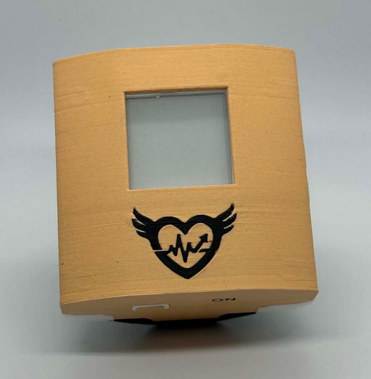

Kompaktowa obudowa o standardzie medycznym
Urządzenie Rythmio zostało zaprojektowane z myślą o pełnej ergonomii i trudach codziennego użytkowania. Konstrukcja łączy miniaturyzację z zaawansowaną ochroną elektroniki.
• Wodoodporność i uszczelnienie TPU
Zintegrowane elastyczne uszczelki z TPU wokół ekranu, przycisków oraz portów gwarantują odporność na wilgoć i pot podczas ciągłego noszenia.
• Ultra-energooszczędny wyświetlacz E-Ink
Zastosowanie ekranu wykonanego w technologii elektronicznego papieru zapewnia nienaganną czytelność w pełnym słońcu przy minimalnym poborze prądu.
• Uniwersalny system mocowania
Dzięki ergonomicznej szlufce na tylnej ścianie, urządzenie można swobodnie konfigurować z różnymi paskami, dostosowując montaż do pasa, klatki piersiowej lub ramienia.
Architektura Systemu
Zaprojektowany Hardware
Autorski moduł pomiarowy z próbkowaniem sygnału z elektrod (RA, LA, RL) przy częstotliwości 250 Hz. Układ gwarantuje wysoki współczynnik tłumienia zakłóceń, stabilny odczyt oraz ponad 24 godziny ciągłej rejestracji na jednym ładowaniu ogniwa.
Zobacz specyfikację płytki →Oprogramowanie Mobilne
Aplikacja integrująca zaawansowane algorytmy przetwarzania sygnału EKG. Odpowiada za płynną, bezprzewodową transmisję danych przez Bluetooth, detekcję anomalii rytmu w czasie rzeczywistym oraz przejrzystą wizualizację dobowych trendów BPM.
Funkcje aplikacji →Konsultacja i Walidacja
System został poddany profesjonalnej ocenie specjalistów z zakresu kardiologii. Pozyskana opinia lekarska potwierdza czytelność generowanych raportów PDF oraz przydatność przesiewową urządzenia w procesie wstępnej diagnostyki pacjenta.
Przeczytaj opinie lekarskie →